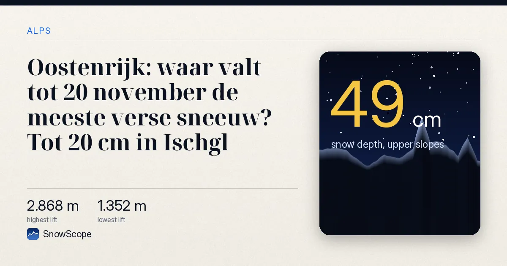

Oostenrijk: waar valt tot 20 november de meeste verse sneeuw? Tot 20 cm in Ischgl
Ischgl ontvangt de meeste verse sneeuw in heel Oostenrijk tegen 20 november, met 20 cm voorspeld. Op 17 november hebben alle 12 skigebieden meetbare sneeuw op hun bovenste hellingen, met Kaprun met de diepste basis op 49 cm.
Bekijk de sneeuwverwachting voor Ischgl in de SnowScope-appSneeuwhoogte, alerts en de 3D-kaart, gratis.
Welke skigebieden krijgen deze week het snelst sneeuw
Tegen 20 november springen drie skigebieden eruit voor aankomende sneeuw. Ischgl staat bovenaan met 20 cm voorspeld, gevolgd door Serfaus Fiss Ladis met 18 cm en Saalbach Hinterglemm met 14 cm. Deze getallen weerspiegelen het patroon: hogere bergen en blootgestelde bergkammen vangen meer van het weersysteem deze week.
De verwachting loopt tot 20 november, dus skiërs die een midweeks tripje plannen kunnen op verse sneeuw rekenen bij deze drie. Lagere skigebieden zoals Kaprun en Hochzillertal-Hochfügen zien kleinere toe names, met 11 cm en 10 cm respectievelijk.
| Skigebied | Sneeuwhoogte | Verse sneeuw, 72 u | Komende dagen | Top |
|---|---|---|---|---|
| Ischgl | 25 cm | 9 cm | 20 cm | 2.868 m |
| Serfaus Fiss Ladis | 22 cm | 8 cm | 18 cm | 2.817 m |
| Saalbach Hinterglemm | 16 cm | 3 cm | 14 cm | 2.090 m |
| Kaprun | 49 cm | 5 cm | 11 cm | 3.024 m |
| Sölden | 33 cm | 6 cm | 11 cm | 3.247 m |
| Hochzillertal-Hochfügen | 30 cm | 5 cm | 10 cm | 2.374 m |

Wat kwam er afgelopen weekend
Verse sneeuw van 14 tot 17 november vertelde een ander verhaal. Ischgl registreerde 9 cm nieuwe sneeuw in die drie dagen, met Serfaus Fiss Ladis dicht in de buurt met 8 cm. Sölden kreeg 6 cm, wat aantoont dat de recente neerslag de noordelijke en centrale dalen begunstigde.
Skigebieden verder zuidelijker, zoals Saalbach Hinterglemm en Hochzillertal-Hochfügen, zagen lichtere val: 3 cm en 5 cm. Dit verschil tussen winnaars en verliezers verschuift vaak dag voor dag als weersystemen over het gebergte bewegen.
Ischgls moment
Ischgl heeft 25 cm op zijn bovenste hellingen, met liften die tot 2.868 m reiken. Het skigebied kreeg 9 cm in de afgelopen drie dagen en staat om nog eens 20 cm bij te krijgen tegen 20 november. Die combinatie—bestaande diepte plus voorspelde aankomst—maakt het het doelwit voor skiërs die deze week zachte sneeuw zoeken.
Serfaus Fiss Ladis weerspiegelt deze logica op kleinere schaal: 22 cm nu, 8 cm recent, 18 cm onderweg. Beide skigebieden liggen hoog genoeg dat vroegseizoensneeuw blijft liggen en snel dieper wordt als verse neerslag arriveert.
Kaprun voordeel: diepte boven vers
Kaprun leidt Oostenrijks ranglijsten met 49 cm op de bovenste hellingen op 3.024 m. Toch staat het lager in deze week's race voor verse sneeuw, met slechts 11 cm voorspeld tegen 20 november en slechts 5 cm die afgelopen weekend arriveerde. Voor skiërs die kiezen tussen basisisdiepte en poedersneeuw biedt Kaprun zekerheid boven verrassing.
Achter Kaprun bieden Hintertuxer Gletscher (41 cm) en Zillertal Arena (36 cm) ook stabiliteit. Deze gletsjer- en hoog-alpengebieden houden meer sneeuw simpelweg omdat hoogte en terrein het daar concentreren, ongeacht wekelijkse weerpulsen.
De dieptekaart lezen
De 12 skigebieden in Oostenrijk splitsen zich ruwweg in tweeën: zes hebben meer dan 29 cm op de bovenste hellingen, zes hebben minder. Sölden (33 cm) en Hochzillertal-Hochfügen (30 cm) bezetten het middenveld. Saalbach Hinterglemm, op 16 cm en 2.090 m, staat het laagst—niet ideaal voor vroeg november, maar typisch voor een lager daal skigebied.
De sneeuwkaart toont dat bovenste-helling dieptes variëren met hoogte en daal blootstelling. Het verschil tussen 16 cm en 49 cm weerspiegelt 1.000 meter hoogteverschil en de bescherming van het terrein. Skiërs die tussen skigebieden kiezen moeten rekening houden met zowel het getal als de hoogte waar het gemeten werd.
Je bezoek plannen
Voor een midweeks tripje bieden Ischgl of Serfaus Fiss Ladis de beste kansen op verse sporen. Beide krijgen naar verwachting 18–20 cm tegen 20 november, en beiden hebben al 22–25 cm. Zorg dat je er 18–20 november bent om het hoogtepunt van de frisheid mee te pakken.
Als je bestaande diepte prefereert met minder afhankelijkheid van deze week's voorspelling, zijn Kaprun of Hintertuxer Gletscher veiliger keuzes. Zet winterbanden op voor de laatste klimmen naar elk hoger skigebied. Vroege starts op 18 en 19 november geven je stevige sneeuwomstandigheden voordat de zon de zuidgerichte hellingen in de loop van de ochtend verzacht.
Tips voor skiërs
- Zet koers naar Ischgl of Serfaus Fiss Ladis voor midweeks poeder: beiden krijgen 18–20 cm tegen 20 november en hebben al solide basen boven de 2.800 m.
- Start je dag vroeg om verse sneeuw op stevige nachtelijke ondergronden te skiën; rond het middaguur zullen zonnige hellingen gaan verzachten.
- Kies Kaprun als diepe basis belangrijker is dan verse sneeuw deze week; op 49 cm biedt het een veiligheidsmarge boven de rotsen.
- Winterbanden of sneeuwketens zijn essentieel voor de laatste kilometers naar skigebieden boven de 2.500 m, vooral na verse sneeuw.
- Voordat je gemarkeerde pistes verlaat, controleer het lokale lawineberichten; met nieuwe sneeuw tot 20 november veranderen de omstandigheden dagelijks.
About these numbers
Resort snow depths are the deepest snow on the resort's upper slopes on the date shown; they are estimates for an area, not a measurement at one point. Forecasts can change. Always read the official avalanche bulletin before going off-piste.
Cite this report
For research, teaching or the press: the numbers and charts are free to reuse under CC BY 4.0 with this citation.
SnowScope (2026), Oostenrijk: waar valt tot 20 november de meeste verse sneeuw? Tot 20 cm in Ischgl, https://snowscope.app/blog/nl/2026/11/verse-sneeuw-oostenrijk-17-november-2026.html, accessed 2026-11-17
SnowScope (Atlas Labs). (2026, November 17). Oostenrijk: waar valt tot 20 november de meeste verse sneeuw? Tot 20 cm in Ischgl. SnowScope snow reports. https://snowscope.app/blog/nl/2026/11/verse-sneeuw-oostenrijk-17-november-2026.html
BibTeX
@misc{snowscope2026versesneeuwoostenrijk17n,
author = {{SnowScope (Atlas Labs)}},
title = {Oostenrijk: waar valt tot 20 november de meeste verse sneeuw? Tot 20 cm in Ischgl},
year = {2026},
month = nov,
howpublished = {\url{https://snowscope.app/blog/nl/2026/11/verse-sneeuw-oostenrijk-17-november-2026.html}},
note = {Published 2026-11-17 17:35 UTC; accessed 2026-11-17}
}· CC BY 4.0 · Methods, data and tools →
Ischgl: snow and temperature by height, this winter vs last (tools) →
Follow Ischgl
Gratis: een bericht als er verse sneeuw komt, en elke ochtend de verwachting.